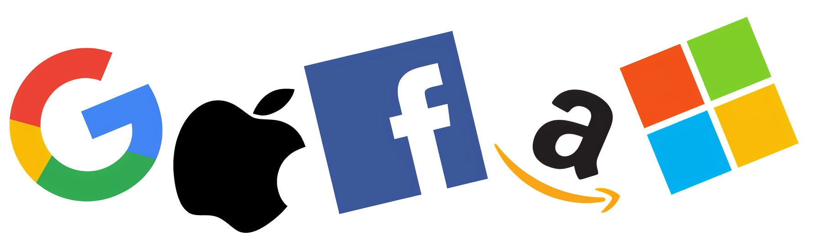
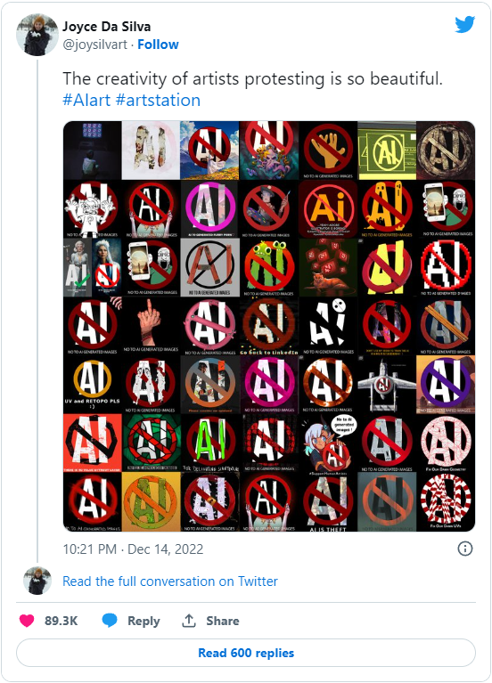

Introduzione
L'intelligenza artificiale è una branca dell'informatica che si occupa di creare algoritmi e sistemi in grado di svolgere compiti che richiedono intelligenza umana, come il riconoscimento del linguaggio, la percezione visiva e la risoluzione di problemi. Ci sono diversi metodi utilizzati per creare sistemi di intelligenza artificiale, tra cui l'apprendimento automatico, la programmazione esplicita e la programmazione evolutiva.
Tipi di intelligenza artificiale
Esistono principalmente due tipi di IA:
Intelligenza artificiale stretta (ANI), ovvero progettata per eseguire un compito specifico e determinato.
Intelligenza artificiale generale (AGI), ovvero in grado di eseguire qualsiasi attività intellettuale che un essere umano può eseguire.
L'intelligenza artificiale, inoltre, presenta due sottocampi molto importanti:

Il deep learning in particolare utilizza delle reti neurali per simulare una
pseudo-intelligenza umana. Tra le più comuni applicazioni delle reti neurali c'è l'identificazione e il
riconoscimento del testo eseguendo un processo chiamato OCR (Optical Charatter Reognition).
Di seguito un esempio interattivo:
Le applicazioni dell'IA
L'IA viene utilizzata in molti aspetti della vita quotidiana e non solo. Le applicazioni IA includono motori di ricerca web avanzati (Google), algoritmi di raccomandazione (utilizzati da YouTube, Facebook, Amazon, Netflix...), comprensione del linguaggio umano (come Siri e Alexa), auto a guida autonoma (Tesla) e molto altro. Inoltre, l'IA sta diventando sempre più importante in molti campi, come la medicina, la finanza e la produzione industriale, per aiutare a prendere decisioni più informate e automatizzare i compiti ripetitivi.
Algoritmi di raccomandazione
Gli algoritmi di raccomandazione (AI recommendation systems) rappresentano una categoria di algoritmi di machine learning usati per prevedere le scelte degli utenti e offrire loro consigli mirati. Questi sistemi, osservando e registrando le scelte fatte dal singolo utente, presentano contenuti e suggerimenti che gli potrebbero piacere e che permettono di rendere l’esperienza molto più intuitiva e immediata. Per prima cosa, gli algoritmi raccolgono i dati rilevanti, usando una serie di metodi come il monitoraggio delle ricerche dell’utente e del suo comportamento online e l’analisi degli interessi dell'utente. YouTube, Facebook, Netflix e Amazon hanno saputo creare nel tempo un sistema di raccomandazione quasi perfetto in grado di proporci quello che più desideriamo e farci stare più tempo sulla piattaforma.
Auto a guida autonoma
 L'utilizzo dell'Intelligenza Artificiale (IA) nelle auto a guida autonoma è uno dei campi di
applicazione più promettenti dell'IA.
L'IA consente alle auto a guida autonoma di comprendere il loro ambiente circostante, utilizzando
sensori come fotocamere, radar e
lidar per raccogliere dati sulla posizione degli oggetti e sulle condizioni della strada. Per qualificarsi
come completamente autonomo, un veicolo
deve essere in grado di navigare senza intervento umano verso una destinazione predeterminata su strade
che non sono state adattate per il suo utilizzo.
Gli algoritmi di apprendimento automatico vengono utilizzati per analizzare questi dati e prendere
decisioni su come la vettura deve comportarsi
in base alle condizioni del traffico e alle leggi della guida. Ciò include la capacità di rilevare gli
ostacoli e di evitarli, di
seguire le segnaletiche stradali e di rispettare i limiti di velocità. L'IA consente anche alle auto a
guida autonoma di comunicare con altre auto e con la rete di
infrastrutture intelligenti per migliorare la sicurezza stradale e la fluidità del traffico.
Le aziende che sviluppano e/o testano auto autonome
includono Tesla, Audi, BMW, Ford, Google, General Motors, Volkswagen e Volvo.
L'utilizzo dell'Intelligenza Artificiale (IA) nelle auto a guida autonoma è uno dei campi di
applicazione più promettenti dell'IA.
L'IA consente alle auto a guida autonoma di comprendere il loro ambiente circostante, utilizzando
sensori come fotocamere, radar e
lidar per raccogliere dati sulla posizione degli oggetti e sulle condizioni della strada. Per qualificarsi
come completamente autonomo, un veicolo
deve essere in grado di navigare senza intervento umano verso una destinazione predeterminata su strade
che non sono state adattate per il suo utilizzo.
Gli algoritmi di apprendimento automatico vengono utilizzati per analizzare questi dati e prendere
decisioni su come la vettura deve comportarsi
in base alle condizioni del traffico e alle leggi della guida. Ciò include la capacità di rilevare gli
ostacoli e di evitarli, di
seguire le segnaletiche stradali e di rispettare i limiti di velocità. L'IA consente anche alle auto a
guida autonoma di comunicare con altre auto e con la rete di
infrastrutture intelligenti per migliorare la sicurezza stradale e la fluidità del traffico.
Le aziende che sviluppano e/o testano auto autonome
includono Tesla, Audi, BMW, Ford, Google, General Motors, Volkswagen e Volvo.
Medicina
L'IA nel settore della sanità può essere utilizzata in diversi modi per aiutare nella diagnosi
e nella ricerca medica.
I sistemi di IA possono essere addestrati per
riconoscere i segni di malattie specifiche, come il cancro, e aiutare i medici nella
diagnosi.
Inoltre, l'IA può essere utilizzata per analizzare grandi quantità di dati di ricerca medica e
individuare nuovi trattamenti e a sviluppare nuovi
farmaci.
Inoltre l'IA può essere utilizzata per automatizzare alcune attività mediche come la
diagnosi
di malattie, la valutazione dei sintomi e la chirurgia.
Produzione Industriale
L'IA nell'automazione industriale e nella produzione può essere utilizzata per migliorare
l'efficienza, la qualità e la redditività delle
operazioni
industriali.
Uno dei modi in cui l'IA viene utilizzata nell'automazione industriale è attraverso i sistemi di
controllo automatizzato, come i sistemi per produzione e i sistemi di controllo
della qualità. Questi sistemi possono utilizzare tecniche di apprendimento automatico per adattare
i processi di produzione in base alle condizioni in tempo reale e ottimizzare
l'utilizzo
delle risorse.
In generale, l'IA può aiutare a rendere le operazioni industriali più efficienti,
flessibili
e adattive, e a supportare la trasformazione verso la produzione ibrida e la
produzione
additiva.
Fantasia
Uno degli sviluppi più recenti è l'utilizzo di tecniche di IA per generare immagini realistiche di oggetti, animali e persone. Un curioso esempio è l'utilizzo di algoritmi di generazione di immagini per creare immagini di gatti. Questi algoritmi utilizzano il deep learning per analizzare migliaia di immagini di gatti esistenti e "imparare" i tratti distintivi di un gatto. Queste informazioni vengono poi utilizzate per generare nuove immagini di gatti che sembrano realistiche.
OpenAI
 OpenAI è una delle più famose un'organizzazioni sull'intelligenza artificiale, che ha
lo scopo di promuovere e sviluppare un'intelligenza artificiale amichevole in modo che l'umanità possa
trarne beneficio. È stata fondata da Elon Musk e Sam Altman.
OpenAI è una delle più famose un'organizzazioni sull'intelligenza artificiale, che ha
lo scopo di promuovere e sviluppare un'intelligenza artificiale amichevole in modo che l'umanità possa
trarne beneficio. È stata fondata da Elon Musk e Sam Altman.
Tra i progetti più importanti e famosi di questa compagnia possiamo trovare DALL·E 2 e ChatGPT.
DAll·E 2
DALL·E 2 è un modello di linguaggio generativo sviluppato da OpenAI, che è stato presentato nel gennaio 2021. A differenza dei modelli di linguaggio tradizionali, che utilizzano un vocabolario limitato e una struttura di frasi predefinita, DALL·E è in grado di generare testo in base a una richiesta di immagini o descrizioni.
Caratteristiche:
- produce immagini in risoluzione massima di 1024 x 1024 pixel
- parte da un testo in linguaggio naturale.
- può generare immagini adeguandosi a vari stili come ad esempio la pixel art, lo stile cartoon, il rendering 3D.
- è capace di produrre immagini realistiche partendo da un testo
DALL·E 2 è stato utilizzato per generare una varietà di contenuti, tra cui descrizioni di immagini, testi di storie e poesie, e persino ricette e istruzioni per la costruzione di oggetti.
ChatGPT
ChatGPT è un prototipo di chatbot basato su intelligenza artificiale e machine learning
sviluppato da OpenAI specializzato nella conversazione con un utente umano.
Il modello è stato allenato in modo ibrido utilizzando istruttori umani e valutazioni
automatizzate per migliorare le sue prestazioni, in modo sia supervisionato e non.
ChatGPT stato lanciato il 30 novembre 2022 e ha attirato l'attenzione per le sue risposte dettagliate e articolate. Questo modello ha la capacità di generare diversi tipi di contenuti, come:
- riassunti
- spiegazioni
- elenchi puntati
- ricette
- testi di canzoni
- poesie
Può anche scrivere del codice in qualsiasi linguaggio di programmazione richiesto dall’utente e può inoltre tradurre un testo in qualsiasi lingua e dare un’interpretazione a un testo fornito in input rispiegandolo.
Controversie e problemi dell'IA
Artisti
Dopo la diffusione di intelligenze artificiali capaci di generare una grande varietà di contenuti artistici in brevissimo tempo, molti creatori hanno protestato contro gli strumenti di generazione di AI-art, considerandoli non etici in quanto vengono spesso addestrati utilizzando set di dati che contengono opere d'arte prelevate da Internet senza il consenso dell'artista.
I membri della comunità online di ArtStation hanno iniziato a denunciare pubblicamente l'arte generata dall'intelligenza artificiale includendo immagini "No AI Art" nei loro portfolio. Le immagini di protesta (sopra alcuni esempi creativi) hanno dominato per giorni la pagina di tendenza di ArtStation. Le proteste sono diventate in breve tempo virali anche su diversi social network, primo fra tutti la piattaforma Twitter.
Non solo gli artisti rischiano di vedersi sostituiti da modelli generativi di IA, ma anche i programmatori temono questo scenario.
Programmatori
 GitHub Copilot è uno strumento di intelligenza artificiale basato su cloud sviluppato da
GitHub e OpenAI per assistere gli utenti degli ambienti di sviluppo integrato
(IDE) mediante il completamento automatico del codice.
GitHub Copilot è uno strumento di intelligenza artificiale basato su cloud sviluppato da
GitHub e OpenAI per assistere gli utenti degli ambienti di sviluppo integrato
(IDE) mediante il completamento automatico del codice.
Tramite questo strumento è possibile generare in pochi secondi codice perfettamente funzionante a partire da un input dato dall'utente sotto forma di commento.
Dopo l'annuncio di questo innovativo strumento, svariati programmatori si hanno avvertito il pericolo di un'intelligenza migliore della loro e capace di scrivere in pochi secondi quello che a loro impiega giorni di lavoro.
Per adesso l'IA non è ancora così evoluta da sostituire questo o altri tipi di lavoro, ma in un futuro non molto lontano è possibile che l'intelligenza artificiale prenda il posto degli umani in diversi campi di competenza.